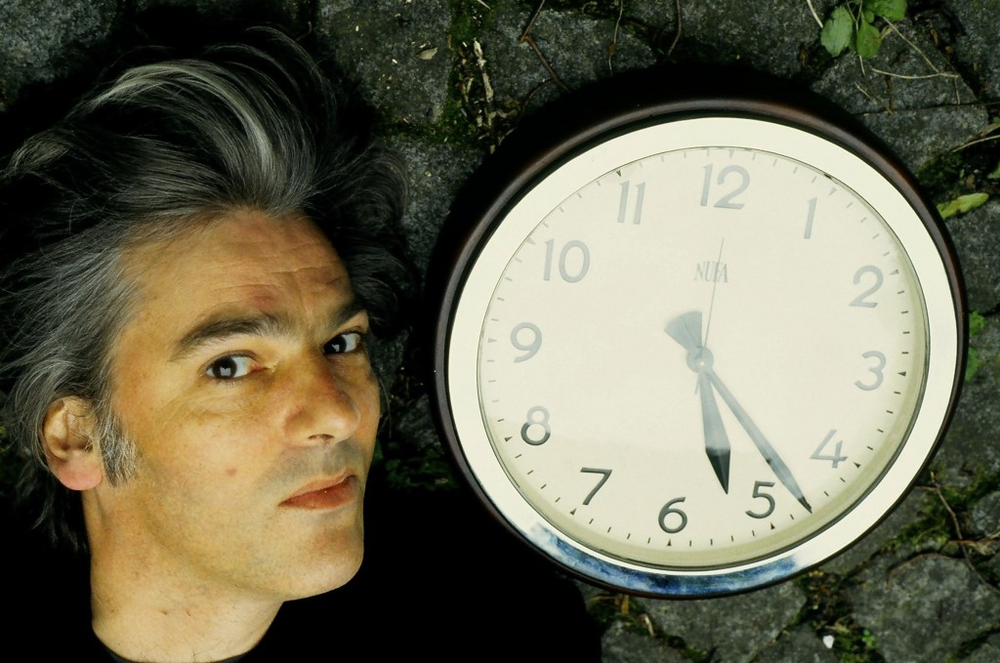

Robyn Hitchcock Fan Site

Discography
- Black Snake Diamond Röle, 1981
- Groovy Decay, 1982
- I Often Dream of Trains, 1984
- Fegmania!, 1985 (with the Egyptians)
- Element of Light, 1986 (with the Egyptians)
- Globe of Frogs, 1988 (with the Egyptians)
- Queen Elvis, 1989 (with the Egyptians)
- Eye, 1990
- Perspex Island, 1991 (with the Egyptians)
- Respect, 1993 (with the Egyptians)
- Moss Elixir, 1996
- Jewels for Sophia, 1999
- Luxor, 2003
- Spooked, 2004
- Olé! Tarantula, 2006 (with the Venus 3)
- Goodnight Oslo, 2009 (with the Venus 3)
- Propellor Time, 2010 (with the Venus 3)
- Tromsø, Kaptein, 2011
- Love From London, 2013